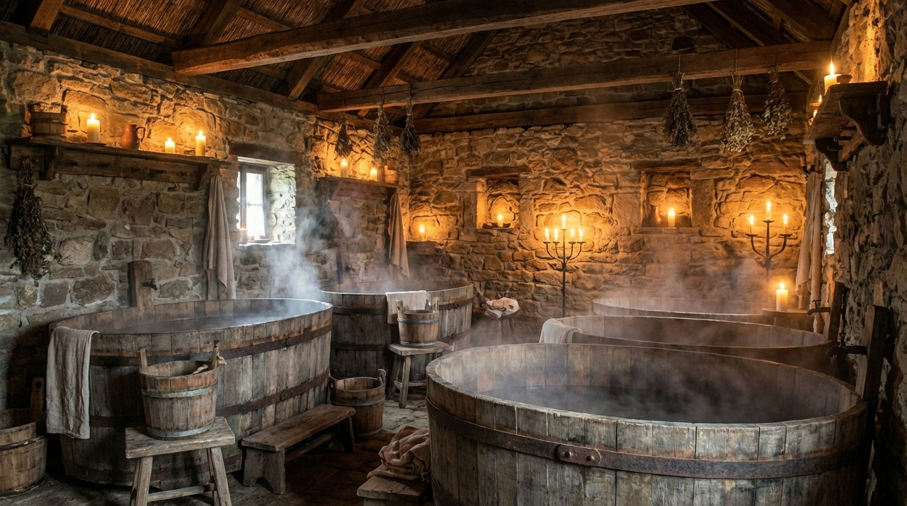

"Ahol a test megtisztul, és a pletykák szárnyra kapnak. Felejtse el a klórt, nálunk a fafüst és a levendula az uralkodó illat."

Amíg a pórnép a patakban mosakodott (már ha egyáltalán), az uraságok tudták, hogy a forró víz és a megfelelő gyógynövények csodákra képesek a csatákban vagy a lovagi tornákon meggyötört izmokkal.
Fürdőházunk a pince legalsó szintjén, az egykori titkos járatok mellett kapott helyet. A víz melegét ma már nem a konyhai szolgálók hordják fel vödrökben – tettünk némi engedményt a modernitásnak –, de a hangulat maradt az eredeti.
Helyrehozzuk, amit az út (vagy az irodai szék) tönkretett.
Hatalmas, fatüzelésű kályhával fűtött, faragott dézsák, erdei fenyő és rozmaring illóolajokkal dúsítva.
30 rézpénz / alkalom
Sűrű gőzkamra, ahol a helyi boszorkány (diplomás gyógynövényszakértő) által kevert füveket párologtatunk
Ingyenes a vendégeknek
Masszőrünk olyan erővel bír, mint egy kovácsmester. Feloldja az izmokat, amik a lovaglás (vagy a klaviatúra) miatt letapadtak.
45 rézpénz / óra
A komló nyugtat, a méz táplál. Bár az összetevők a tavernában is kaphatók, itt a bőrére kenjük, nem a gyomrába.
50 rézpénz / alkalom
Mert mi nem az ókori Rómában vagyunk.